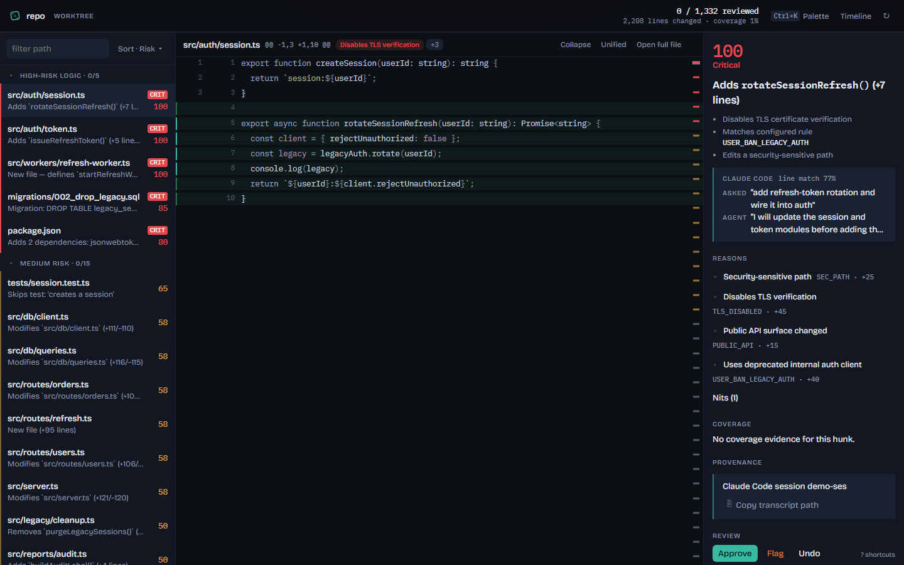

Triage
Ordered queue with risk bands, digests, and skim bundles so you read what can break first.
Sift
A local-first review cockpit for large AI-generated diffs — critical logic first, mechanical noise last.

Ordered queue with risk bands, digests, and skim bundles so you read what can break first.
Optional agent intent and coverage evidence sit beside the hunk — describe, never judge.
Flag in web or TUI → agent fixes via MCP or brief → fresh hunks return under watch.
GitHub-first release: install from source with Git, Node.js 22.13+, and Corepack.
git clone https://github.com/hunar2006/sift.git
cd sift
corepack enable
pnpm install --frozen-lockfile
pnpm build
pnpm sift